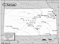

Kansas

Attention: If you use this or any of the AIRS lists in any state, please report any bad phone numbers or emails to the webmaster. This is the responsibility of all users, including you. Thank you!
Steve Reed
EMAIL: skreed_at_ruraltel_dot_net
CROSSROADS: I-70 and HWY 183
CITY: Hays
ZIP CODE: 67601
PHONE: 785-650-4540
VW'S: 60 Double Cab, 74 Acapulco Thing, 70 Beetle Convertible, 66 Westy, 53
Porsche 356
COMMENTS: I've been working on, driving, and restoring VW's of all types since
1986. I have several parts cars, New parts and have a small part time VW
business. I also have the resources to retrieve your stranded VW. If
you need help don't hesitate to call.
AVAILABLE: Anytime
I am familiar with: 36hp, 1200, 1300, 1500, 1600, 1776+, dual carbs, type4
engine
I CAN PROVIDE THE FOLLOWING SERVICES:
INTERNET ACCESS
TOOLS
TELEPHONE ACCESS
TRANSPORTATION HELP
MECHANICAL HELP
SPACE TO WORK ON BUS
STORAGE SPACE
SOME PARTS
COFFEE/TALK
CAMPING: 4 nights or more
SPARE ROOM: none
Favorite beer type: Thick and chewy
john smithhisler
(jwsmith@globenetworks.com)
CROSSROADS: hwy 50/hwy 56
dodge city, 67801
VW'S: bugs and buses, all air cooled
AVAILABLE: weekends and evening
familiar with: 36hp, 1200, 1600, 1776+
I CAN PROVIDE THE FOLLOWING SERVICES:
INTERNET ACCESS
TOOLS
TELEPHONE ACCESS
TRANSPORTATION HELP
MECHANICAL HELP
SPACE TO WORK ON BUS
COFFEE/TALK
Favorite beer type: Micro brands
Cory
(n2slugs@yahoo.com)
CROSSROADS: I-70 and I-35
Kansas City, 66208
PHONE: 1-913-558-5795 (cell)
VW'S: 1969 Bug, 1967 Bug, 1969 KG (auto stick), and formerly 1970 Bus
COMMENTS: I don't own a bus right now, but spent enough time on mine and
other VWs to be of help. I also need a bit of a network
incase I get crazy enough to take the auto-stick on the
highway! I have enough running cars around here to steal
parts if need be...
AVAILABLE: Weekdays after 5, Weekends, all summer
familiar with: 1300, 1500, 1600
I CAN PROVIDE THE FOLLOWING SERVICES:
INTERNET ACCESS
TOOLS
TELEPHONE ACCESS
TRANSPORTATION HELP
MECHANICAL HELP
PARTS AVAILABLE
Favorite beer type: Commercial brands
Dave Cook
EMAIL: davevw_at_yahoo_dot_com
CROSSROADS: Hwy 24, I-70, hwy 133
CITY: Manhattan, 66502
PHONE: 785-806-0254
VW'S: '78 Bus, '90 Corrado, '92 Cabriolet
COMMENTS: Though I only have one aircooled VW now, I've owned and operated quite
a few in the past and still have reference materials and tools that are
applicable. Willing to help aircoolers or watercoolers. I've had
more than one "Wayward Hippie" broken down in the area and I'm willing
to help more!
AVAILABLE: Welcome to try anytime.
I am familiar with: 36hp, 1500, 1600, fuel injection, type4 engine, diesel,
conversions
I CAN PROVIDE THE FOLLOWING SERVICES:
INTERNET ACCESS
TOOLS
TELEPHONE ACCESS
TRANSPORTATION HELP
MECHANICAL HELP
SPACE TO WORK ON BUS
STORAGE SPACE
SOME PARTS
COFFEE/TALK
CAMPING: 1 night
SPARE ROOM: 1 night
Favorite beer type: Micro brands
Allen Riggs
(allen_r_riggs@hotmail.com)
CROSSROADS: 78th St. & Parallel Parkway
kansas city, 66112
PHONE: 913-334-0727/816-459-7811
VW'S: 1971 Super Beetle <1yr (other vw's all of my life)
COMMENTS: My father is only 20 minutes from my home and he is a mech. by trade. He
is also very willing to help. Portable generator and air compressor with air tools.
Not to mention a trailor large enough to carry a Type II.
AVAILABLE: I am a retail manager if not at home call 913-962-8222
familiar with: 1600
I CAN PROVIDE THE FOLLOWING SERVICES:
INTERNET ACCESS
TOOLS
TELEPHONE ACCESS
TRANSPORTATION HELP
MECHANICAL HELP
SPACE TO WORK ON BUS
STORAGE SPACE
PARTS AVAILABLE
COFFEE/TALK
CAMPING SPOT: 1 night
Favorite beer type: Thick and chewy
Adam
(Endsabruptly@excite.com)
CROSSROADS: I-470 and Gage Blvd.
Topeka, 66614
PHONE: 785-272-3761
VW'S: 1972 SuperBeetle, 1975 Westfalia, 1981 Vanagon
COMMENTS: Fairly new to mechanics, but learning all the time.
familiar with: 1500, 1600, fuel injection
I CAN PROVIDE THE FOLLOWING SERVICES
INTERNET ACCESS
TOOLS
TELEPHONE ACCESS
TRANSPORTATION HELP
MECHANICAL HELP
SPACE TO WORK ON BUS
PARTS AVAILABLE
COFFEE/TALK
CAMPING SPOT: 1 night
Favorite beer type: Anything cold
Matthew J. Ramsey
EMAIL: mattthewriter_at_hotmail_dot_com
CROSSROADS: Highway 59, 7 and 73
Atchison, 66002
PHONE: 913.360.3382
VW'S: 1958 SC, 1969 Westy, 1976 Westy
COMMENTS: I'm a bus owner with a small parts stash and a general willingness to
help when ever feasible. I do have extensive contacts with other bus
owners and parts retailers in the general area.
AVAILABLE: anytime
I am familiar with: 1600, 1776+, type4 engine
I CAN PROVIDE THE FOLLOWING SERVICES
INTERNET ACCESS
TOOLS
TELEPHONE ACCESS
TRANSPORTATION HELP
MECHANICAL HELP
SPACE TO WORK ON BUS
STORAGE SPACE
SOME PARTS
COFFEE/TALK
CAMPING: 2 nights
SPARE ROOM: 2 nights
Favorite beer type: Thick and chewy
Craig Baum
EMAIL: craig_baum75_at_yahoo_dot_com
CROSSROADS: I-135 and 56
McPherson, 67460
PHONE: (620)245-9728
VW'S: 67 convertible 65 deluxe 63 double cab
AVAILABLE: 24 hours
I am familiar with: 36hp, Bastard40hp, 1200, 1300, 1500, 1600, 1776+, dual carbs,
fuel injection, type4 engine
I CAN PROVIDE THE FOLLOWING SERVICES:
INTERNET ACCESS
TOOLS
TELEPHONE ACCESS
TRANSPORTATION HELP
MECHANICAL HELP
SPACE TO WORK ON BUS
STORAGE SPACE
SOME PARTS
COFFEE/TALK
CAMPING: 1 night
SPARE ROOM: 1 night
Favorite beer type: Anything cold
Gene Calhoun / Cal
EMAIL: calhoun_at_sutv_dot_com
CROSSROADS: 81 & 160 & I-35
CITY: Wellington, 67152-4327
PHONE: (316) 204-7005
VW'S: 58, 71, 75 type2, 62, 64, 73, 74, Type1, convertible rabbit
COMMENTS: VW NUT!!! Restore, recycle, and repair them. I have tons of parts, and
just love getting dirty.
AVAILABLE: m - f after 5p.m. just about anytime on weekends
I am familiar with: 36hp, 1200, 1300, 1600, dual carbs, fuel injection
I CAN PROVIDE THE FOLLOWING SERVICES:
INTERNET ACCESS
TOOLS
TELEPHONE ACCESS
TRANSPORTATION HELP
MECHANICAL HELP
SPACE TO WORK ON BUS
SOME PARTS
CAMPING: none
SPARE ROOM: none
Favorite beer type: I don't drink
Jeff Ó Neill
EMAIL: joneill4_at_ku_dot_edu
CROSSROADS: 23rd and Kasold
CITY: Lawrence
ZIP CODE: 66047
PHONE: 785-856-9645
VW'S: '72 Super and '70 Westy
COMMENTS: KU student; restoring a '72 and driving my Westy
AVAILABLE: Evenings and Weekends
I am familiar with: 1600
I CAN PROVIDE THE FOLLOWING SERVICES:
INTERNET ACCESS
TOOLS
TELEPHONE ACCESS
TRANSPORTATION HELP
MECHANICAL HELP
SPACE TO WORK ON BUS
SOME PARTS
COFFEE/TALK
SPARE ROOM: 2 nights
Favorite beer type: Thick and chewy
sketch
EMAIL: sketch_423_at_yahoo_dot_com
CROSSROADS: us 50 us 83
CITY: Garden City
ZIP CODE: 67846
PHONE: (620) 275-4220
VW'S: 1973 Westy
AVAILABLE: Any time
I am familiar with: 1600, 1776+, dual carbs, type4 engine
I CAN PROVIDE THE FOLLOWING SERVICES
INTERNET ACCESS
TOOLS
TELEPHONE ACCESS
TRANSPORTATION HELP
MECHANICAL HELP
SPACE TO WORK ON BUS
STORAGE SPACE
SOME PARTS
COFFEE/TALK
CAMPING: 4 nights or more
SPARE ROOM: MOVE IN!!! :)
Favorite beer type: Thick and chewy
Mushroom
EMAIL: rpartridge_at_cox_dot_net
CITY: Hutchinson
ZIP CODE: 67501
PHONE: 620-474-3458
VW'S: 72 vw bus
COMMENTS: mechanically inclined but not equipped for major overhaul. willing to
lend a helping hand when needed.
AVAILABLE: i work 3rd shift so i have no schedule
I am familiar with: type4 engine
I CAN PROVIDE THE FOLLOWING SERVICES
INTERNET ACCESS
TOOLS
TELEPHONE ACCESS
TRANSPORTATION HELP
MECHANICAL HELP
SPACE TO WORK ON BUS
COFFEE/TALK
CAMPING: 2 nights
SPARE ROOM: none
Favorite beer type: Beer is for wimps!
Kris Styes
EMAIL: kisphoto_at_mac_dot_com
CROSSROADS: Central Kansas Hightway 61
CITY: Hutchinson
ZIP CODE: 67502
PHONE: 620 728 1389
ONLY CALL IF EMERGENCY
VW'S: T1, T2
COMMENTS: None
AVAILABLE: All
I am familiar with: 1600, 1776+, dual carbs
I CAN PROVIDE THE FOLLOWING SERVICES
INTERNET ACCESS
TOOLS
TELEPHONE ACCESS
TRANSPORTATION HELP
MECHANICAL HELP
SPACE TO WORK ON BUS
STORAGE SPACE
SOME PARTS
CAMPING: 4 nights or more
SPARE ROOM: 4 nights or more
Favorite beer type: I don't drink
Other 1
EMAIL: amcmurray1_at_cox_dot_net
CROSSROADS: Jefferson and 69 HWY(Broadway)
CITY: Pittsburg
ZIP CODE: 66762
PHONE: 6208751984
ONLY CALL IF EMERGENCY
VW'S: 1974 type 2 westfalia
COMMENTS: I have many tools and means of doing most repairs.
AVAILABLE: mon-fri 6-12pm w/ends-anytime
I am familiar with: type4 engine
I CAN PROVIDE THE FOLLOWING SERVICES
INTERNET ACCESS
TOOLS
TELEPHONE ACCESS
TRANSPORTATION HELP
MECHANICAL HELP
SPACE TO WORK ON BUS
STORAGE SPACE
CAMPING: 1 night
SPARE ROOM: 1 night
Favorite beer type: Room temp will do.
josh
EMAIL: janssenphoto_at_yahoo_dot_com
CROSSROADS: douglas and seneca
CITY: wichita
ZIP CODE: 67203
PHONE: 316 214 8587
VW'S: looking for my first bus
COMMENTS: i'm on a quest to get my first bus, i'm putting myself out there so i
might be able to learn a few thing from you and lend a hand if you need it. to
just do the coffee and talk please email if you need a bit of help please feel
free to call anytime, sleep and work are over rated
AVAILABLE: call the cell any time
I CAN PROVIDE THE FOLLOWING SERVICES
INTERNET ACCESS
TOOLS
TELEPHONE ACCESS
TRANSPORTATION HELP
MECHANICAL HELP
SPACE TO WORK ON BUS
COFFEE/TALK
CAMPING: 2 nights
SPARE ROOM: 2 nights
Favorite beer type: Anything cold
bobandsarahschultz
EMAIL: sarahschultz23_at_sbcglobal_dot_net
CROSSROADS: I-135 and US Highway 56
CITY: McPherson
ZIP CODE: 67460
PHONE: 6202414203, SHOP -(620) 241-4480.
VW'S: '02 New Beetle, '67 Beetle, "63 Beetle
COMMENTS: I own a restoration shop here in McPherson and I specialize in
air-cooled VW and Porsche
AVAILABLE: Anytime
I am familiar with: 25hp, 36hp, Bastard40hp, 1200, 1300, 1500, 1600, 1776+, dual
carbs, type4 engine
I CAN PROVIDE THE FOLLOWING SERVICES
INTERNET ACCESS
TOOLS
TELEPHONE ACCESS
TRANSPORTATION HELP
MECHANICAL HELP
SPACE TO WORK ON BUS
STORAGE SPACE
SOME PARTS
COFFEE/TALK
CAMPING: 4 nights or more
SPARE ROOM: 4 nights or more
Favorite beer type: Rare brands
vw62rag
EMAIL: vw62rag_at_hotmail_dot_com
CROSSROADS: 70 hwy and branner st exit
CITY: topeka (aka TOP CITY)
ZIP CODE: 66607
PHONE: 785 969 5891
VW'S: bugs and busses pre 67
COMMENTS: i was born n raised in long beach CALI. moved to ks for a calmer life
for my family. im a huge vw lover, i have around 10 now. i like drag racin my
fast vw and love cruzin my slammed slow low vw. if your local or cruzin through
hit me up maybe we can meet.
AVAILABLE: who really knows? whenever....
I am familiar with: 1200, 1300, 1500, 1600, 1776+, dual carbs
I CAN PROVIDE THE FOLLOWING SERVICES
INTERNET ACCESS
TOOLS
TELEPHONE ACCESS
TRANSPORTATION HELP
MECHANICAL HELP
SPACE TO WORK ON BUS
STORAGE SPACE
SOME PARTS
COFFEE/TALK
CAMPING: 4 nights or more
SPARE ROOM: none
Favorite beer type: Anything cold
Justin Koroush
EMAIL: jwk227_at_yahoo_dot_com
CROSSROADS: US-69 and 126
CITY: Pittsburg
ZIP CODE: 66762
PHONE: 620-231-0606
VW'S: 79 Westy
COMMENTS: Just bought my first VW today, have always wanted one. I'm a
decent mechanic and will be glad to help with what knowledge I can offer.
AVAILABLE: Mon-Tuesday anytime. Wed-Sun work from 2-11pm but you can call
and leave a msg or my gf might be around and then you can just stop by and wait
if youw ant
I am familiar with: fuel injection
I CAN PROVIDE THE FOLLOWING SERVICES
INTERNET ACCESS
TOOLS
TELEPHONE ACCESS
TRANSPORTATION HELP
MECHANICAL HELP
SPACE TO WORK ON BUS
COFFEE/TALK
CAMPING: 4 nights or more
SPARE ROOM: MOVE IN!!! :)
Favorite beer type: Anything cold
Dewayne "Duck" Moore
EMAIL: duck_dot_moore_at_gmail_dot_com
CROSSROADS: State 36 & 283
CITY: Norton, 67654 PHONE: 918-509-0485
VW'S: 1958 VW Bus/Camper, 2003 Beetle Convertible
COMMENTS: Can help on I-70 between Hays, Kansas and Kansas/Colorado line, and on
I-80 between Kearney, Nebraska and North Platte, Nebraska...and of course any
area in between these! :)
AVAILABLE: Call any time, but work hours are 8am-5pm Mon-Fri.
I am familiar with: 1200/1300, 1500/1600, 1776+, dual carbs, fuel injection,
diesel
I CAN PROVIDE THE FOLLOWING SERVICES
INTERNET ACCESS
TOOLS
TELEPHONE ACCESS
TRANSPORTATION HELP
MECHANICAL HELP
SPACE TO WORK ON BUS
SOME PARTS/CAN GET THEM
CAMPING: 1 night
SPARE ROOM: 1 night
Favorite beer type: I don't drink
John W
EMAIL: jpw4prez_at_yahoo_dot_com
CROSSROADS: 17th and Washburn
CITY: Topeka, 66604 PHONE: 785-250-8665
VW'S: 1964 Safari Trail Buggy, 1968 Sunroof Baywindow and 69 Baywindow
COMMENTS: I am a 24 year old college student with 11yrs of vw experience. I have
owned over 12 vws and like baywindow busses the best! I like to attend shows in
surrounding areas and are working with a few local buddies to start a vw club in
Topeka. Take it easy! John
AVAILABLE: I'm a college student so just call!
I am familiar with: Bastard40hp, 1200/1300, 1500/1600
I CAN PROVIDE THE FOLLOWING SERVICES
INTERNET ACCESS
TOOLS
TELEPHONE ACCESS
MECHANICAL HELP
SPACE TO WORK ON BUS
SOME PARTS/CAN GET THEM
COFFEE/TALK
CAMPING: 1 night
SPARE ROOM: CALL ME/IT DEPENDS
Favorite beer type: Anything cold
Bryan
EMAIL: Kudagra_at_hotmail_dot_com
CROSSROADS: Highway 56 and Highway 59
CITY: Baldwin City, 66006 PHONE: 913-963-1399
VW'S: 1986 Jetta Turbo Diesel, 1969 Beetle Convertible
COMMENTS: Im a mechanic and have been working on VW since age 7 (ask my parents
when I disassembled the carb on their 71 Beetle) I have worked on all models but
the Mk5s. I have a mobile service truck with lots of metric tools and plenty of
factory manuals. Work phone is 913-687-5088. Also have a tow bars and a Jeep for
towing. I also have access to a shop for major repairs.
AVAILABLE: Anytime
I am familiar with: 25/36hp, Bastard40hp, 1200/1300, 1500/1600, 1776+, dual
carbs, fuel injection, type4 engine, wasserboxer, diesel, conversions
I CAN PROVIDE THE FOLLOWING SERVICES
INTERNET ACCESS
TOOLS
TELEPHONE ACCESS
TRANSPORTATION HELP
MECHANICAL HELP
SPACE TO WORK ON BUS
STORAGE SPACE
SOME PARTS/CAN GET THEM
COFFEE/TALK
CAMPING: none SPARE ROOM: none
Favorite beer type: Home brews 'XXX'
Ian
EMAIL: Lei_Kung-at-hotmail-dot-com
CROSSROADS: I-35/Highway69 & 87th Street
CITY: Overland Park, 66204 PHONE: 913-972-0589
VW'S: 1984 Vanagon Campmobile
COMMENTS: I bought my first Volkswagen in December '07. I'm still learning the
ropes. I'm willing to help anyone in need anytime I can. I will be on the road
indefinitely starting in April.
AVAILABLE: Mon-Sat afternoons, after 10pm anyday
I CAN PROVIDE THE FOLLOWING SERVICES
INTERNET ACCESS
TOOLS
TELEPHONE ACCESS
TRANSPORTATION HELP
CAMPING: none
SPARE ROOM: 2 nights
Favorite beer type: Thick and chewy
Jason
EMAIL: jconradtx_at_yahoo_dot_com
CROSSROADS: Seneca and Douglas
CITY: Wichita, 67203
VW'S: 72 Westy Weekender and 72 Super Beetle Convertible
COMMENTS: Just a guy in the last years of his 20's who moved back to Wichita
after exploring the US for the last 10 years. Came home to grow some roots and
be with the family.
Ive owned AC VWs since I was 16 but in all that time have not become as
mechanically inclined as I would like. Local friends who can help me keep my
"Fatties" alive and/or just shoot the breeze about AC VW's would be
great. I marked "MECHANICAL HELP" below only because I would be a
great second set of hands but dont look to me for mechanical advice. You tell
me. :o)
AVAILABLE: Travel with my job a lot but work from home when I am in town.
I am familiar with: 1500/1600, type4 engine
I CAN PROVIDE THE FOLLOWING SERVICES
INTERNET ACCESS
TOOLS
TELEPHONE ACCESS
TRANSPORTATION HELP
MECHANICAL HELP
SPACE TO WORK ON BUS
COFFEE/TALK
CAMPING: none SPARE ROOM: none
Favorite beer type: Light and Airy
Jason
EMAIL: Wolcott
CROSSROADS: I-70 K-177
CITY: Manhattan, 66503 PHONE: 785-313-7002
VW'S: 1977 Bay Window
COMMENTS: I own a '77 Bay Window Westy. I've got a 7000 square foot aircraft
hangar to work out of and have decent mechanical skills or can help find someone
who has better skills!!
AVAILABLE: Pretty much available whenever as I'm self employed
I am familiar with: 1776+, fuel injection
I CAN PROVIDE THE FOLLOWING SERVICES
INTERNET ACCESS
TOOLS
TELEPHONE ACCESS
TRANSPORTATION HELP
MECHANICAL HELP
SPACE TO WORK ON BUS
STORAGE SPACE
SOME PARTS/CAN GET THEM
COFFEE/TALK
CAMPING: 4 nights or more SPARE ROOM: 4 nights or more
Favorite beer type: Beer is for wimps!
Marc Schumer
EMAIL: westy_LA_fade_away_at_hotmail_dot_com
CROSSROADS: HWY 435/State Line Rd.
CITY: Leawood, 66206
PHONE: 913 375 0434
VW'S: 1967 Westy
COMMENTS: Owned several busses over the years - all models...I'm not expert, but
I have some tools, manuals, etc. and willing to lend a hand, if I can.
AVAILABLE: anytime (if I am around)
I am familiar with: 1500/1600
I CAN PROVIDE THE FOLLOWING SERVICES
INTERNET ACCESS
TOOLS
TELEPHONE ACCESS
TRANSPORTATION HELP
MECHANICAL HELP
SPACE TO WORK ON BUS
SOME PARTS/CAN GET THEM
COFFEE/TALK
CAMPING: 1 night SPARE ROOM: none
Favorite beer type: Thick and chewy
Austin
EMAIL: pilot_at_swbell_dot_net
CROSSROADS: Hwy 54 & Hwy83
CITY: Liberal, 67901
PHONE: 16206553658
VW'S: 58,66,71 buses, 66,78 bugs
COMMENTS: I am a college student have been into vws for about 6 years and have a
small parts stash.
If you need help just call.
AVAILABLE: I'm a college student so call or text any time.
I am familiar with: 1200/1300, 1500/1600
I CAN PROVIDE THE FOLLOWING SERVICES
INTERNET ACCESS
TOOLS
TELEPHONE ACCESS
MECHANICAL HELP
SPACE TO WORK ON BUS
STORAGE SPACE
SOME PARTS/CAN GET THEM
COFFEE/TALK
CAMPING: 1 night SPARE ROOM: none
Favorite beer type: Commercial brands
Kendra
EMAIL: kanthony2006_at_tmail_dot_com
CROSSROADS: I-70 & I-635
CITY: KCK, 66102
PHONE: 913-548-3744
VW'S: 1978 Bus
COMMENTS: Very new to the VW scene but willing to help out in any way i can
AVAILABLE: anytime
I CAN PROVIDE THE FOLLOWING SERVICES
INTERNET ACCESS
TELEPHONE ACCESS
SPACE TO WORK ON BUS
COFFEE/TALK
CAMPING: none SPARE ROOM: CALL ME/IT DEPENDS
Favorite beer type: Commercial brands
Ken Ward
EMAIL: kenjward_at_att_dot_net
CROSSROADS: Central and Oliver
CITY: Wichita
ZIP CODE: 67208
PHONE: 719-760-0475
VW'S: 1976 Westy, 2001 Beetle
COMMENTS: My mechanical knowledge is lacking, but I'm more than willing to help
in any other way I can and to share resources/names of people who CAN help.
AVAILABLE: Call anytime, but evenings and weekends are best
I CAN PROVIDE THE FOLLOWING SERVICES
INTERNET ACCESS
TELEPHONE ACCESS
TRANSPORTATION HELP
SOME PARTS/CAN GET THEM
COFFEE/TALK
CAMPING: 4 nights or more SPARE ROOM: 1 night
Favorite beer type: Thick and chewy
Jason Zerbe
EMAIL: jzerbe1_at_mac_dot_com
CROSSROADS: I-70 and Old Highway 81
CITY: Ottawa county (bennington) ZIP CODE: 67422
PHONE: 785 643-0995
VW'S: 1974 VW Camper van
COMMENTS: I do travel quite a bit (by road always) and recently purchased my
first air cooled vehicle. I grew up in a VW bus and have always wanted one. The
opportunity finally arose and I jumped on it. It is a full camper conversion in
spectacular condition. I live out in the rural district with plenty of room for
babies, pets, vehicles. There are a few dogs and cats around so your animals
should be good with others.
AVAILABLE: whenever, call if i don't answer leave a message and ill return it
very shortly.
I am familiar with: 1500/1600
I CAN PROVIDE THE FOLLOWING SERVICES
INTERNET ACCESS
TOOLS
TELEPHONE ACCESS
TRANSPORTATION HELP
MECHANICAL HELP
SPACE TO WORK ON BUS
STORAGE SPACE
COFFEE/TALK
CAMPING: 3 nights SPARE ROOM: 2 nights
Favorite beer type: Micro brands
{kind=link}